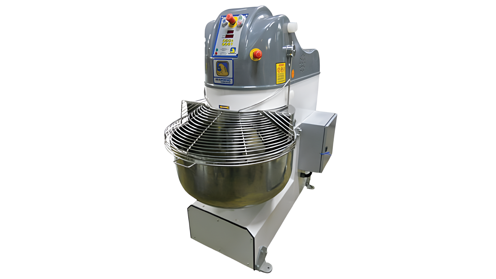
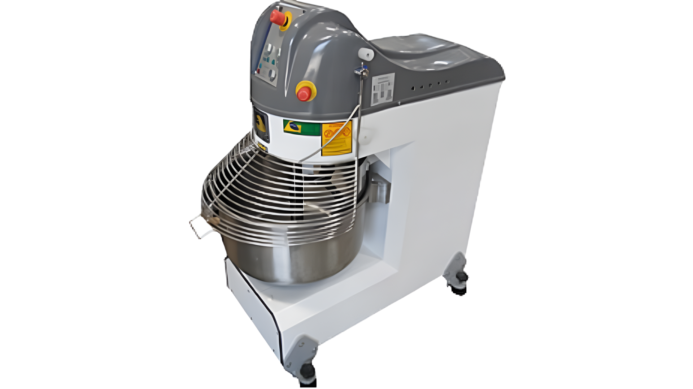

A Amassadeira Semi Rápida da Brasforno é um
equipamento industrial voltado para panificação e confeitaria. Sua
cadeia começa na própria Brasforno, responsável por adquirir
matérias-primas e realizar a montagem completa da máquina.
Quando adquirida por uma instituição, ela entra como um
bem de capital. No SENAI, é tombada como
patrimônio institucional — sua instalação técnica foi realizada
pelo professor responsável de elétrica, garantindo funcionamento
seguro e dentro das normas.
Os componentes incluem chapas de aço, motores elétricos, correias
de transmissão, botões de emergência e grades de proteção —
fornecidos por empresas especializadas antes de chegarem à linha
de montagem da Brasforno.

Vista Frontal

Vista Lateral
Ficha Técnica
EquipamentoAmassadeira Semi Rápida
FabricanteBrasforno
CategoriaEquipamento Industrial
SetorPanificação & Confeitaria
Modelo de VendaB2B
LogísticaMaquinário Pesado
InstalaçãoTécnica Especializada
Capacidade Tacho25–50 kg de massa
Faixa de PreçoR$ 8.000 – R$ 18.000